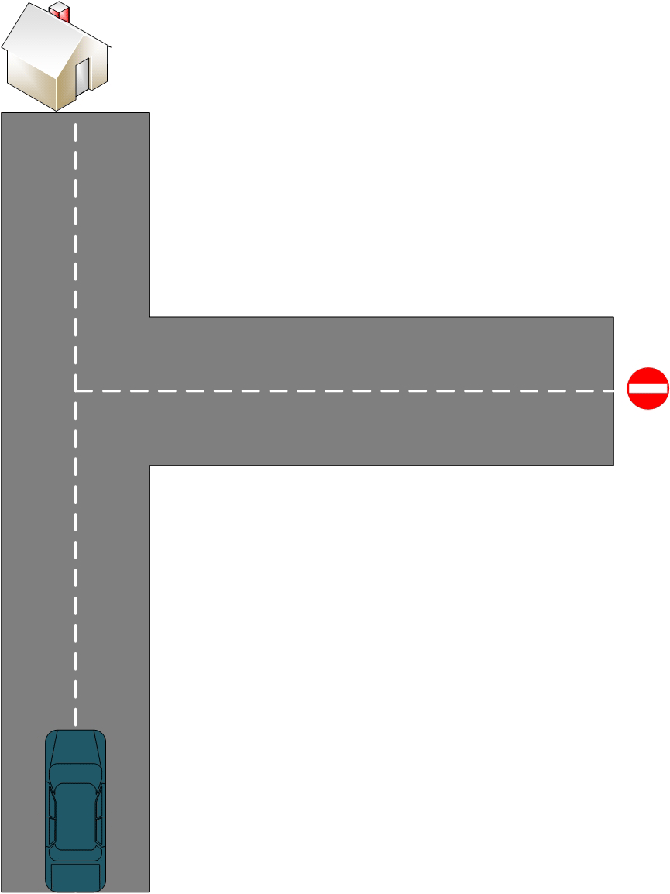
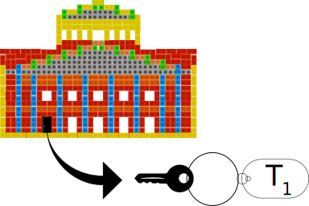
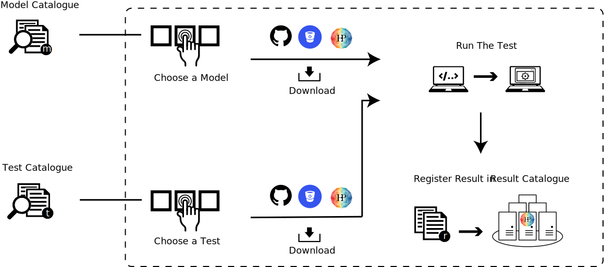
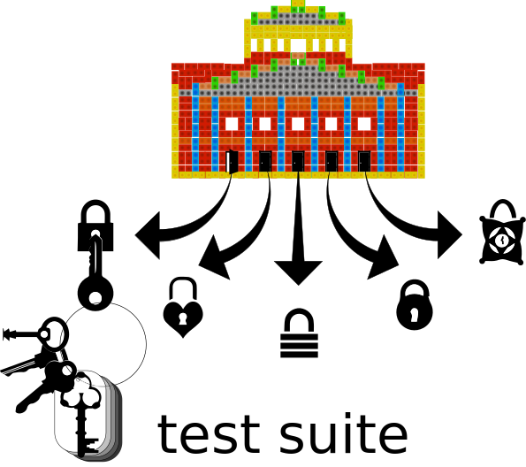
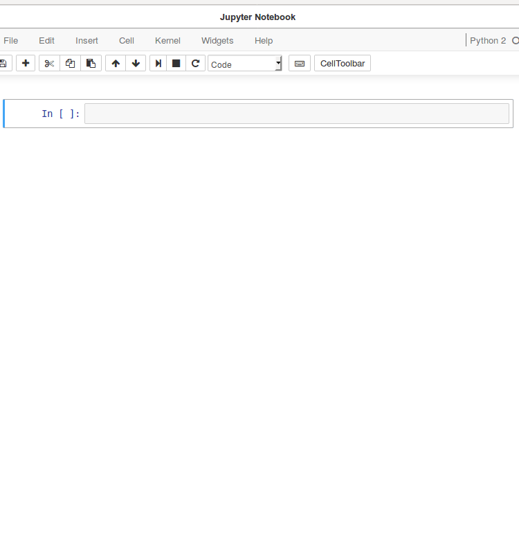

What - Why - How of Validation.
HBP Codejam, Lausanne 2017
by B. Lungsi Sharma, Ph.D. PostDoctoral Fellow, CNRS-UNIC lungsi.sharma@unic.cnrs-gif.fr

There's a difference between doing things right and doing the right thing. - Peter Drucker
Doing things right is efficiency.
Doing the right thing is wisdom and effectiveness.
The righter you do the wrong thing the wronger you become.
Why?
If you do the wrong thing, make a mistake and correct it; you become wronger.
Therefore, it is better to do the right thing wrong than wrong things right.

Anyone setting out to dispute anything ought always to begin by saying what he does not dispute. Beyond stating what he proposes to prove he should always state what he does not propose to prove. - G. K. Chesterton, Orthodoxy
Validation, What It Is NOT.
Validation is NOT checking that the model works the way you think it does.
Validation, What It IS.
Validation IS checking that the model does the right thing.
Process of determining the degree to which a computer simulation is an accurate representation of real world from perspective of intended use of model. - DoD Modeling and Simulation; DoE ASC Program
Validation is NOT about truth.

Validation IS about control.
Why Validate.
How To Perform Validation.
What does the model maker do?
Wrapping the model in SciUnit.
For this "real-world"
We've built the model.

Wrapping the model in SciUnit.
For the model
Create SciUnit-Capability.
Create SciUnit-Capability by,
# mansion_capability.py
♦ importing sciunit
import sciunit
♦ then create a class based on sciunit.Capability
class DoorStatus( sciunit.Capability ):
♦ follow this by creating a method of this class.
def opens_door1( self ):
The method merely acts as a scaffold.
raise NotImplementedError( "Must implement opens_door1 method." )
Wrapping the model in SciUnit.
Once the SciUnit-Capability is created.
Implement this capability in the model.

Implement the capability in the model by,
# mansion_model.py
♦ importing sciunit
import sciunit
♦ importing the created mansion_capability
from mansion_capability import DoorStatus
♦ then create a class based on sciunit.Model
class MansionModel( sciunit.Model, DoorStatus ):
♦ follow this by creating a method of this class, with the same name as in DoorStatus class.
def opens_door1( self, r = 0, F = 0, theta = 0 ):
return (r*F*sin(theta)) # torque
This wraps the model in SciUnit.
What does the test maker do?
Wrapping the test in SciUnit.
This is done by implementing the capability (we created earlier) in the test.

Implement the capability in the test by,
# mansion_door_test.py
♦ importing sciunit
import sciunit
♦ importing the created mansion_capability
from mansion_capability import DoorStatus
♦ then create a class based on sciunit.Test
class MansionDoor1Test( sciunit.Test ):
♦ set required_capabilities and score_type
required_capabilites = (DoorStatus, ) score_type = sciunit.Score.<some_score>
♦ follow this by creating the method generate_prediction
def generate_prediction( self, model ): return model.opens_door1(r=1.3, F=5, theta=70)
♦ then create the method compute_score
def compute_score( self, prediction, observation ): return self.score_type( prediction == observation )
This wraps the test in SciUnit.
What does the test runner do?
Running the model & test wrapped in SciUnit.
>> from mansion_model import MansionModel
>> from mansion_door_test import MansionDoor1Test
# observation data of 6 Nm torque
>> vtest = MansionDoor1Test( 6 )
# get the computed score
>> score = vtest.judge( MansionModel )
Individual tests can form a test suite.
Validation Framework Workflow
Validation Framework Components


>> import models
>> desired_test_uri =
"https://validation.brainsimulation.eu/tests/1"
>> from hbp_validation_framework import ValidationTestLibrary
>> test_library = ValidationTestLibrary(username="lungsi")
>> test = test_library.get_validation_test(desired_test_uri,
show_plot=True)
>> score = test.judge(getattr(models, 'Bianchi')(),
deep_error=True)
>> from hbp_validation_framework.datastores import CollabDataStore
>> collab_storage = CollabDataStore(username="lungsi",
collab_id="1655",
base_folder="VUC_Bianchi_DepolTest_results")
>> test_library.register(score, collab_storage)
